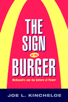

<body bgcolor="#FFFFFF" text="#000000" link="#0000FF" vlink="#CC0000" alink="#CC0000"><center><hr width="350" size="1" align="center" noshade>A refreshingly sophisticated yet readable examination of the power of American culture&#151and burgers<hr width="350" size="1" align="center" noshade><p><a href="https://cdcshoppingcart.uchicago.edu/Cart/ChicagoBook.aspx?ISBN=9781566399319&&PRESS=temple" target="_top">Buy this book!</a> | <a href="https://cdcshoppingcart.uchicago.edu/Cart/Cart.aspx?PRESS=temple" target="_top">View Cart</a> | <a href="https://cdcshoppingcart.uchicago.edu/Cart/Cart.aspx?PRESS=temple" target="_top">Check Out</a></p><p></p></center><!--none//--><h1>The Sign of the Burger</h1>
<H2>McDonald's and the Culture of Power</H2>
<h3>Joe L. Kincheloe</h3>
<P>cloth 1-56639-931-9 $69.50, Apr 02, <FONT COLOR=#990033>Out of Stock Unavailable</FONT>
<br>paper 1-56639-932-7 $27.95, Apr 02, <FONT COLOR=#990033>Available</FONT>
<BR> 240 pp
5.5x8.25
</P><BLOCKQUOTE><I><!-- don't use --></I></BLOCKQUOTE>
<p><blockquote><p><I>"I didn't want to remain a hick from the mountains... In my cultural naivete I saw McDonald's as a place somehow where modern culture capital could be dispensed. Keeping these memories in mind as years later I monitored scores of conversations about the Golden Arches in the late 1990's, it became apparent that McDonald's is still considered a marker of a modern identity."</I></blockquote>
<p>So begins a complicated journey into the power of one of the most recognizable signs of American capitalism: The Golden Arches. <I>The Sign of the Burger</I> examines how McDonald's captures our imagination: as a shorthand for explaining the power of American culture; as a symbol of the strength of consumerism; as a bellwether for the condition of labor in a globalized economy; and often, for better or worse, a powerful educational tool that often defines the nature of culture for hundreds of millions the world over.
<p>While many books have offered simple complaints of the power of McDonald's, Joe Kincheloe explores the real ways McDonald's affects us. We see him as a young boy in Appalachia, watching the Golden Arches going up as the&#151hopeful&#151arrival of the modern into his rural world. And we travel with him around the world to see how this approach of the modern affects other people, either through excitement or through attempts at resisting McDonald's power, often in unfortunate ways. Through it all, Kincheloe makes clear, with lucidity and depth, the fact that McDonald's growth will in many ways determine both the nature of accepting and protesting its ever-expanding presence in our global world.
<BR>&nbsp;<h2>Excerpt</h2><P>Excerpt available at <a href="http://www.temple.edu/tempress">www.temple.edu/tempress</a></p>
<BR>&nbsp;<h2>Reviews</h2>
<p><I>"McDonald's has come to be a highly contested symbol of globalization and American commodity culture. Joe Kincheloe offers a multifaceted exploration of the battles over McDonald's throughout the world, of how it serves as a force of education and enculturation, and the ways that different audiences consume McDonald's as a source of meanings as well as (highly dubious) diet. Using a variety of sources and his own ethnographical research, Kincheloe provides the most many-sided critical analysis of McDonald's yet to appear."</I>
<br>&#151<b>Douglas Kellner</b>, George F. Kneller Chair in the Philosophy of Education, UCLA
<p><i>"'A burger is never simply a burger.' This is a case study of the capacity of neocolonial giants like Disney, Nike, Coca Cola, and, in particular, McDonald's to ingratiate themselves in worldwide markets and achieve cultural hegemony by promoting an ideology of markets. Academic collections at all levels."</i>
<br>&#151<b><i>Choice</i></b>
<p><i>"Kincheloe's study is a crucial tool for educators who are desperately seeking new educational resources that promote critical thinking, not only for themselves, but also for their students."</i>
<br>&#151<b><i>Harvard Educational Review</i></b>
<p><i>"Kincheloe�s work, written in an easy, fluid style peppered with (often horrific) statistics and public responses, is a useful cultural study of corporate capitalism....For the anthropologist of work, this is an important book because it calls for a closer attention to the forms of discourses that mask conditions of labor and capital."</i>
<br>&#151<b><i>Anthropology of Work Review</i></b>
<BR>&nbsp;<h2>Contents</h2><P>
<p>Introduction
<br>1. Why McDonald's?
<br>2. Hugging McDonald's
<br>3. McDonald's as a Postmodern Phenomenon
<br>4. McDonald's as Cultural Pedagogy
<br>5. Winning Consent for Capital
<br>6. The Struggle for the Sign of the Burger
<br>References
<br>Index
</P><BR>&nbsp;<H2>About the Author(s)</H2>
<P><b>Joe L. Kincheloe</b> is Professor of Education at Brooklyn College, and is co-editor, most recently, of <I>Kinderculture: The Corporate Construction of Childhood</I>.</P>
<BR><H2>Subject Categories</H2>
<p><A HREF="/tempress/sociology.html" TARGET="_top">Sociology</a>
<BR><A HREF="/tempress/labor.html" TARGET="_top">Labor Studies and Work</a>
</p>
<BR><h2 class="inpageheading">In the series</H2>
<P><I><a href="http://www.temple.edu/tempress/labor_crisis.html" onMouseOver="window.status='Click for other books in this series!'; return true;" onMouseOut="window.status=''; return true;" target="_top">Labor in Crisis</a></i>, edited by Stanley Aronowitz.
</p><p>The hope for a revived progressive movement in American politics and culture depends to a large extent on the possibility of a revived labor movement. This series will stimulate debate and discussion about the state of the American labor movement and its relation to the future of America by publishing short, provocative books that offer varying analyses and prescriptions for labor's revival as well as diverse assessments of its prospects. Books in the series will be relevant to a vision of the labor movement that presupposes movements and people who care about the chances of more equality, more democratic participation in the institutions of political and social life, and more power for those traditionally excluded from economic and political decision making.</p>
<p align="center"><a href="https://cdcshoppingcart.uchicago.edu/Cart/ChicagoBook.aspx?ISBN=9781566399319&&PRESS=temple" target="_top">Buy this book!</a> | <a href="https://cdcshoppingcart.uchicago.edu/Cart/Cart.aspx?PRESS=temple" target="_top">View Cart</a> | <a href="https://cdcshoppingcart.uchicago.edu/Cart/Cart.aspx?PRESS=temple" target="_top">Check Out</a></p><p><font face="Arial" size="1"><a href="copyright.html" onMouseOver="window.status='Web Copyright Policy';return true;" onMouseOut="window.status=''" title="Web Copyright Policy">&copy;</a> 2015 <a href="http://www.temple.edu" target="new" onMouseOver="window.status='Link to Temple University home page';return true;" onMouseOut="window.status=''" title="Link to Temple University home page">Temple University</a>. All Rights Reserved. http://www.temple.edu/tempress/titles/1599_reg.html</font></p>